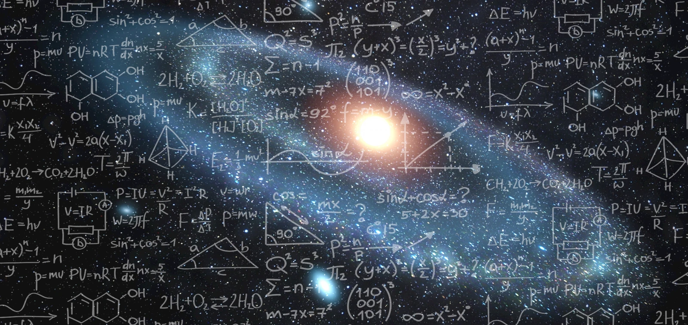

What If Mathematics Isn't a Part of the Universe?
Did humans invent mathematics to describe the universe, or discover a structure that existed long before us?

A fundamental question that has prevailed among us students for centuries, “Why do we need to learn maths?”. Over the generations, we have been taught Maths at schools and universities, but could the reason behind this learning be even deeper than we assume. This blog explores whether maths was invented by humans as a tool to understand the principles ruling the universe or did it already exist independently without the requirement of human intervention.
To understand this, perhaps we need to go back to the beginning of our attempts to understand the universe. For a long time, humans believed that Earth was at the centre of everything. The ideas of Aristotle and later Ptolemy provided an image of the cosmos that seemed convincing for centuries. Then came Copernicus, Galileo and Kepler, who challenged this painted imagery. Suddenly, Earth was no longer the centre of the universe. Mathematics was becoming more than something used for counting, a way to describe the reality.
Then came Newton. Newton's laws gave humans a mathematical way to describe motion and gravity. The movement of objects that seemed chaotic could suddenly be expressed through equations and predictable relationships. But here comes the interesting part, Newton did not invent gravity. The universe was already behaving according to its physical laws. He developed maths to describe the obvious observations he made.
So, were we discovering mathematics or simply inventing a language to describe patterns that were already there? The question becomes even stranger when we reach Einstein. Newton had treated space and time as absolute, but Einstein's theory of relativity changed that picture. Space and time were no longer completely separate ideas but rather a well-connected idea as spacetime, and even time itself could pass differently depending on motion and gravity. Mathematics was now being used not just to calculate what happens in the universe, but to describe the structure of the universe itself.
And then we look up. The universe is not static. By studying the light coming from distant galaxies, scientists discovered that the universe is expanding. When we look farther into space, we are also looking further into the past because light takes time to reach us. Mathematical models allowed scientists to trace this expansion backwards, leading to the idea of a much hotter, denser early universe. But mathematics does not always make the universe easier to imagine.
When quantum mechanics came into the picture at the microscopic level, the universe refused to behave according to the simple rules we experience in everyday life. The uncertainty principle tells us that there are fundamental limits to how precisely certain pairs of physical quantities can be known simultaneously. Suddenly, mathematics was describing a universe that the human mind could not easily visualise. And maybe this is where my original question becomes more complicated. Maybe mathematics is not simply a subject that humans invented for school. Maybe it is the language we created to translate patterns in a universe that existed long before us. The symbols, equations and terminology are certainly human creations. But the relationships they describe like motion, gravity, space, time and quantum behaviour, do not depend on us being present to exist.
Imagine, what if humans disappeared tomorrow. Our textbooks would disappear. Our equations would disappear. Even the word maths would disappear. But would the universe stop following its physical laws? Probably not. And that leaves me with a question that mathematics itself cannot easily answer: Did we invent mathematics, or did we discover a structure that was already written into the universe? The most fascinating possibility is somewhere in between. We may have invented the language, but discovered the patterns. And if this is true, then maybe the real reason we learn mathematics is not simply to solve equations but to learn how to recognise the hidden patterns of a universe that was here long before we were.